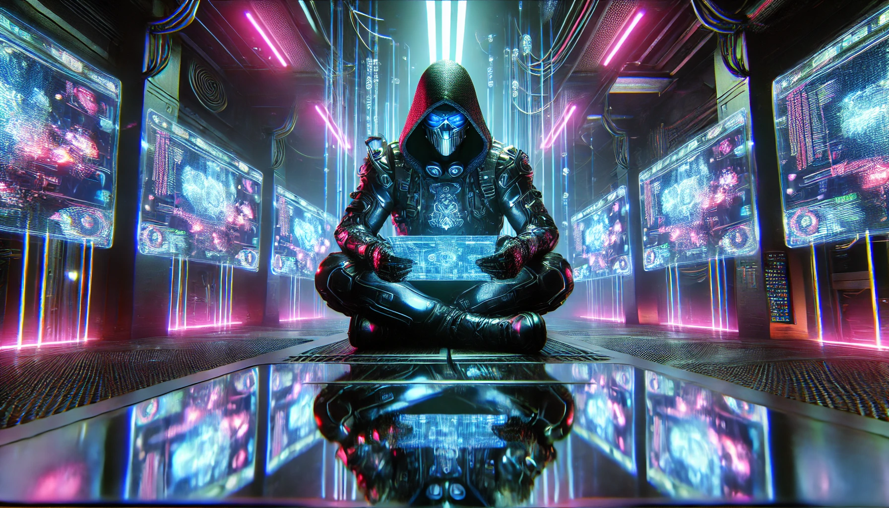

Qui est H@CKERBOY ?
H@CKERBOY est bien plus qu'un simple pseudonyme. C'est tout d'abord c'est un humain. Étudiant en électronique, développeur passionné de web et d'applications mobiles, il fusionne technologie et art digital dans un univers futuriste unique.
Ma mission
À travers son blog et ses créations numériques, H@CKERBOY veut être à la tête d'une révolution technologique, former la prochaine génération de jeune créateurs, et inspirer une vision cybernétique, libre et consciente du digital. C'est un pont entre la technologie brute et l'humain sensible et solitaire.
mes compétences
- Développement Web : HTML, CSS, JavaScript, React, Node.js
- Cybersécurité : Analyse de vulnérabilité, PenTesting
- UX/UI : Design futuriste, interfaces immersives
- Création de contenu : Blogging, tutoriels, éducation numérique
Une vision futuriste
H@CKERBOY rêve d’un monde connecté, éthique, inclusif et open-source. Là où chaque ligne de code est un poème, chaque bug une énigme, chaque interface un portail vers demain. Il incarne l’esprit hacker dans son sens le plus noble : comprendre, transformer, libérer.
